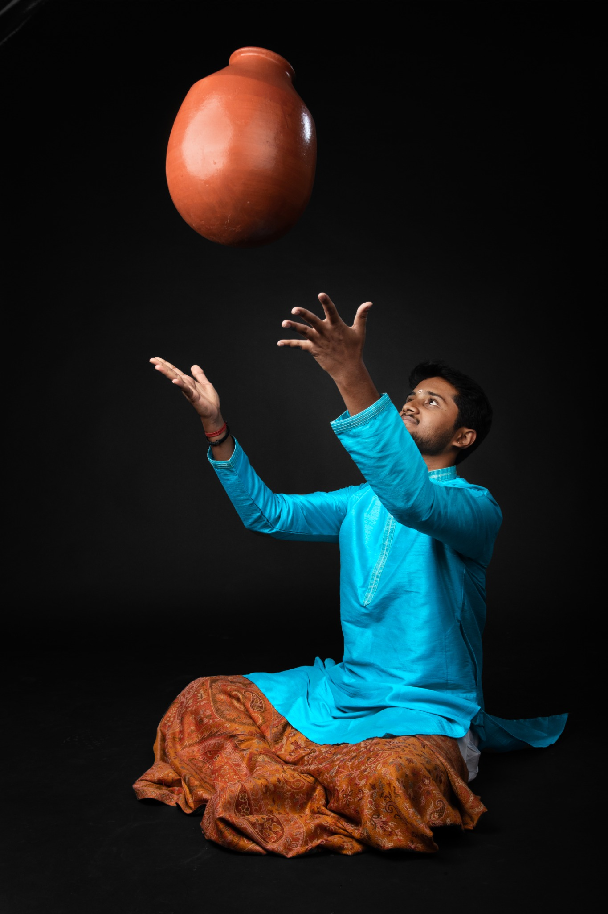
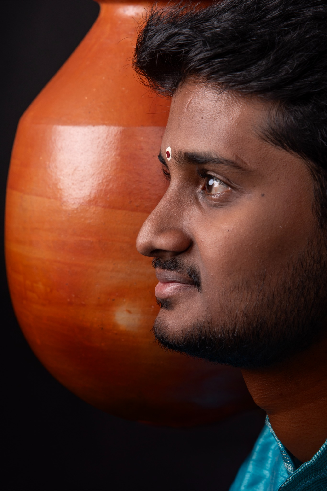
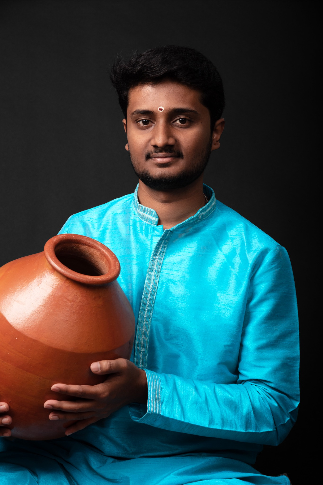

GHATAM
SESSIONS
SESSIONS
LIVE / PERCUSSION
CARNATIC PERCUSSION · GHATAM · COMPOSITION
Ghatam artist, percussionist, composer and rhythm arranger exploring the space between tradition and contemporary sound.
01 — THE ARTIST
Shamith S Gowda is a Carnatic percussionist and Ghatam artist, disciple of Vid. Giridhar Udupa. His work spans live performance, composition, rhythm arrangement, recording and collaborative music.
At the centre of his practice is laya — the architecture of rhythm and the musical conversation that happens between artists. Through the Ghatam, Shamith explores both the depth of Carnatic tradition and new possibilities across contemporary and world music.
02 — MUSIC
03 — PROJECTS
A collaborative instrumental collective where melody, rhythm and contemporary textures meet in an evolving musical conversation.
Collaborate ↗Classical accompaniment, percussion features and rhythm-led collaborations centred on the distinctive voice of the Ghatam.
View gallery ↗Rhythm training for Bharatanatyam students and musicians, with focus on tala, sollukattu, jati construction and rhythmic confidence.
Enquire ↗04 — GALLERY



“The Ghatam is not just an instrument.
It is a voice, a texture and a way of thinking about rhythm.”
05 — CONTACT
For concerts, collaborations, recording sessions, workshops and laya classes.
ghatamshamith@gmail.com